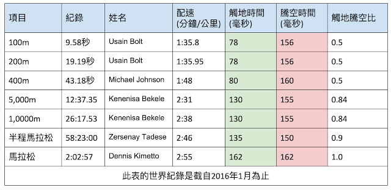

各項世界紀錄保持者的跑步技術數據
之前花了好幾天的時間用軟體分析了目前幾位男子世界紀錄保持人的技術數據，發現到一件很有趣的現象：競賽距離愈短，腳掌的觸地時間也愈短，而且存在正比關係(表格中的綠底部分)，也就是說馬拉松世界紀錄保持人丹尼斯．基米托(Dennis Kipruto Kimetto)的觸地時間是所有田徑項目中最長的，長達162毫秒；百米的世界紀錄保持人波特(Usain Bolt)的觸地時間是最短的，只有78毫秒。
就我長期的分析，八成跑者的觸地時間都在200毫秒以上。如果你想提高速度的話，縮短觸地時間是非常重要的訓練方向。表格中的這些數據可以當成各類跑者的參考指標，比如說你是練短跑的，但在衝刺時的觸地時間都在100毫秒附近，那就一點競爭力都沒有了，此時不管體能、肌力練得再強大速度都很難再提升，訓練重點反而要放在縮短觸地時間上面。

那要怎麼縮短觸地時間呢？提高步頻就可以了嗎？並非那麼簡單：
前陣子在幫花蓮的一位朋友分析跑步動作時，發現它在以馬拉配速(M配速)在訓練時，步頻可以達到200spm (每分鐘200步，每步費時300毫秒)，但觸地時間就佔了230毫秒，騰空時間只有70毫秒→觸地時間÷騰空時間＝230÷70 = 3.28。離世界紀錄的觸地空騰空比1.0還有很大一段差距。
雖然他的步頻很高，看起來很有效率，但觸地時間太長，效率都被吃掉了。因為觸地時的腳掌必定處於靜止狀態，此狀態就會拖到身體前進的速度，所以觸地時間愈短愈好。
由此，我們也可以發現高步頻並不等於有較短的觸地時間。觸地時間與步頻應是兩個獨立的數值。
此外，我也發現不管這些世界紀錄保持者的競賽項目為何，從波特到丹尼斯的騰空時間分別落在156與162毫秒之間(表格中的紅底部分)，非常接近，它所代表的意義是：不管速度快慢(從時速21到37公里)，這些跑者都不會利用推蹬地面來創造更長的騰空時間，因此他們的垂直振幅都相當小。
這項發現的另一層意義是：推蹬是有助於延長騰空時間和步幅，只是這一點效益會帶來其他更多缺點，所以連世界紀錄保持者都不這麼做，我們也不用這麼做，我們可以看到全馬世界紀錄保持者的騰空時間是162毫秒，波特是156毫秒，可見透過延長騰空時間來增加步幅或提高速度，並不是正確的訓練方向。